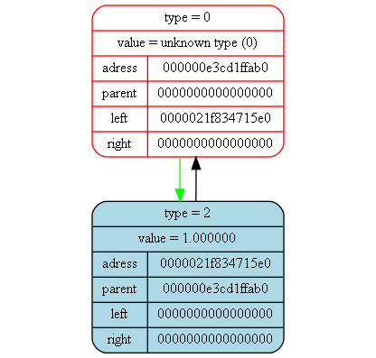

<pre>
<pre>

Tree dump from (int main()) at (main.cpp) at line (22):
tree [000000e3cd1ffae0] "&func_tree" at (int main()) at (main.cpp)(19):
{
	status   = 1
	error    = 0
	size     = 3

	((x)+(1.000000))
}
<pre>

Tree dump from (int main()) at (main.cpp) at line (28):
tree [000000e3cd1ffa80] "&der_tree" at (int main()) at (main.cpp)(25):
{
	status   = 1
	error    = 0
	size     = 1

	(1.000000)
}
